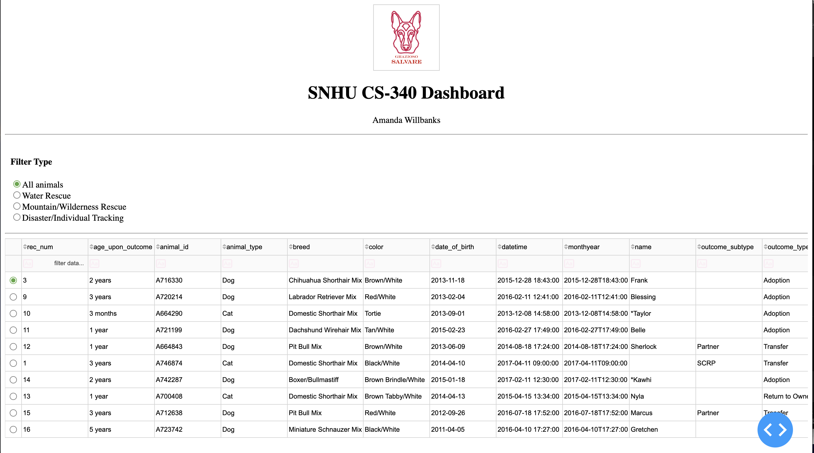
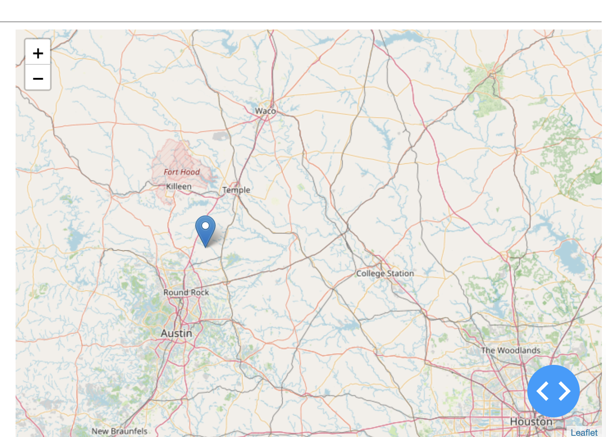

CS 499 Computer Science Capstone ePortfolio
This ePortfolio highlights the enhancement of my CS 340 Grazioso Salvare Dashboard project completed during the SNHU Computer Science program. The project demonstrates client/server development, MongoDB database integration, dashboard visualization, and software engineering concepts.
The capstone enhancements focus on improving software architecture, database interaction, filtering algorithms, and application maintainability while remaining aligned with the original project scope.
The Grazioso Salvare Dashboard is a Python-based client/server application that connects to MongoDB and provides interactive analysis of animal shelter records. The application allows users to filter rescue candidates, visualize breed data, and display animal locations using an interactive geographic map.
Upload screenshots of your dashboard into the screenshots folder and they will appear here.

